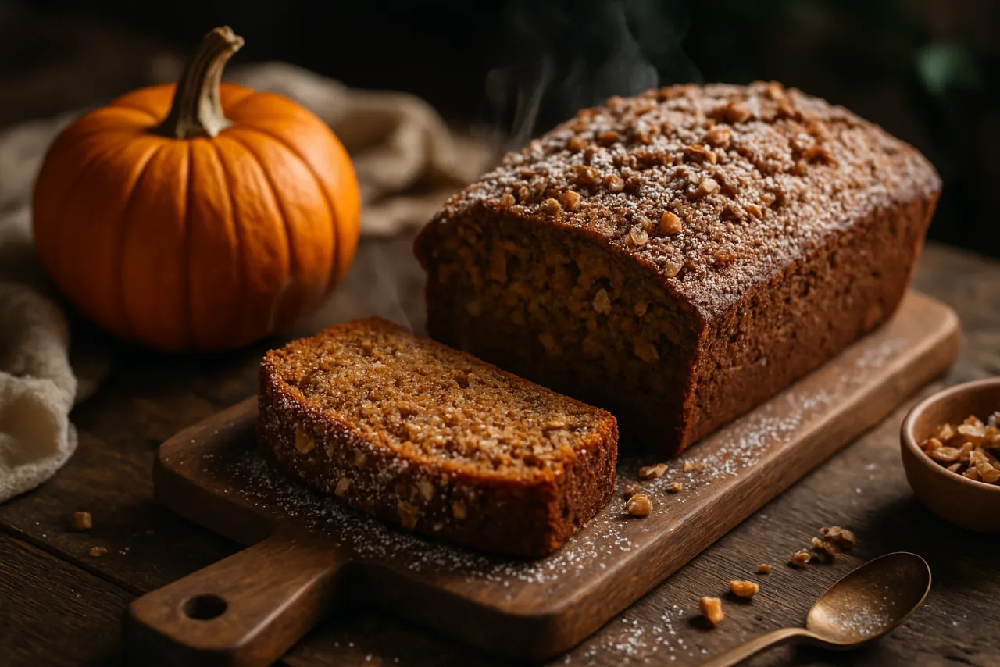

Fresh Pumpkin Bread (Spiced & Nutty)
Roasted-from-scratch pumpkin, a warm spice cabinet, and toasted nuts in one deeply moist loaf.
Open recipe →
Roasted-from-scratch pumpkin, a warm spice cabinet, and toasted nuts in one deeply moist loaf.
Open recipe →